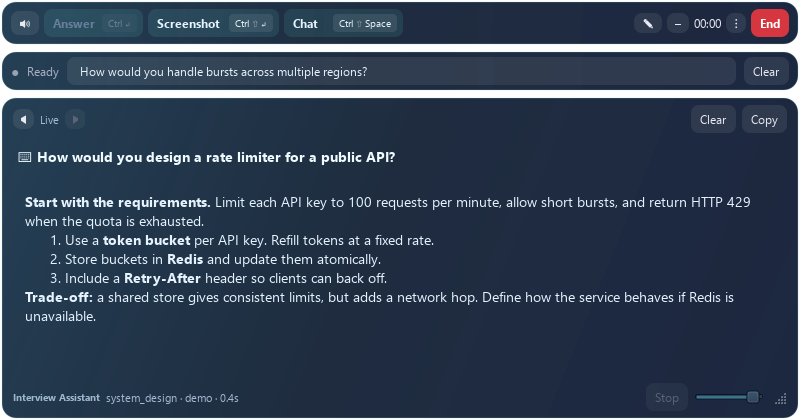

Keep the conversation in view
Follow the captured question and read streamed answers in a compact desktop overlay.
Your interview workspace, ready when you are. Download the Windows app and bring your questions, ideas and preparation together.
Personal development build. This installer is unsigned. If Windows blocks it, keep security protections enabled and use the existing source-app shortcut on your current laptop.

Actual app preview · Navy glass panels and cyan controls.
Follow the captured question and read streamed answers in a compact desktop overlay.
Bring your resume, role and interview instructions into each session.
Revisit saved Q&A, add notes and review sessions after the conversation.
Download the installer above. This build supports Windows 10 and 11 on 64-bit PCs.
Open the app and complete setup. Enter your own API keys on the new laptop; they are never included in this download.
Add your resume and interview context, choose your audio devices, then explicitly start capture when you’re ready.
Installing the app does not transfer your resumes, session history or settings. Automatic sync and a one-click backup/restore tool are not available yet.
Keep your old laptop’s data until you have moved and checked it. Add your provider API keys separately on the new machine. This website does not store your interview content.
A medium-sized desktop workspace with navy glass surfaces and cyan accents.
Compare this checksum with your downloaded installer to confirm the file matches this build.
{{SHA256}}